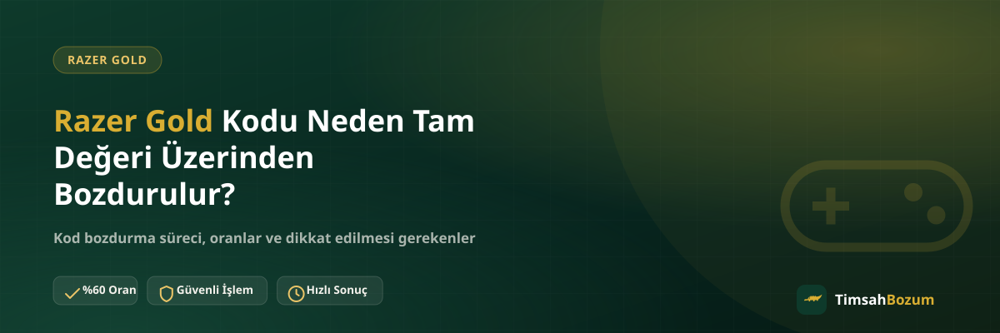

Mobil ödeme veya Paycell bakiyesi bozduranlar, bakiyenin istedikleri bir kısmını seçip bozdurabiliyor. Razer Gold kodunu ilk kez bozduracaklar da genelde aynı mantığı bekliyor: "Kodumun belirli bir miktarını bozdurayım, kalanını saklayayım." Ama Razer Gold farklı bir mantıkla çalışıyor ve kodun tamamı tek seferde değerlendiriliyor. Bu yazıda bunun nedenini ve pratikte ne anlama geldiğini açıklıyoruz.
Razer Gold Kodu Neden Parça Parça Bozdurulamaz?
Razer Gold kodu, hesaba yüklenmiş bir bakiye değil; sabit bir değere sahip tek kullanımlık bir koddur. Kod kullanılmadığı sürece bir bütün olarak durur, kullanıldığı anda ise tüm değeri tek seferde harcanmış sayılır. Bu yapı, kodun yarısının veya bir kısmının ayrı şekilde değerlendirilmesini teknik olarak mümkün kılmıyor; bozum işlemi de bu nedenle kodun tam değeri üzerinden yürüyor.
Kod Tabanlı ile Bakiye Tabanlı Hizmet Arasındaki Fark Nedir?
Pokus ve Paycell gibi hizmetlerde elindeki şey bir hesap bakiyesidir; bakiye bölünebilir, istediğin bir kısmını bozdurup kalanını hesabında bırakabilirsin. Razer Gold ve iTunes gibi kod tabanlı hizmetlerde ise elindeki şey tek bir koddur ve kod bölünemez. Bu ayrımı anlamak, hangi hizmette ne kadarını bozdurabileceğin konusunda baştan doğru bir beklenti oluşturmanı sağlar; konuyu daha geniş ele aldığımız kod tabanlı ve bakiye tabanlı bozum farkı yazımıza da göz atabilirsin.
Kodun Tamamını Bozdurmak Dezavantaj mı?
Hayır, aslında süreci basitleştiren bir durum. Tutar seçimi yapman gerekmiyor, kodu paylaştığın anda kodun tam değeri üzerinden güncel oran uygulanıyor ve işlem tek adımda ilerliyor. Bakiye tabanlı hizmetlerde olduğu gibi "ne kadarını bozdurmak istiyorum" diye bir karar vermene gerek kalmıyor; bu da ilk mesajında paylaşman gereken bilgiyi azaltıyor.
Kodu Oyun Hesabıma Yüklemeden Bozdurabilir miyim?
Evet. Kod henüz kullanılmamış olduğu sürece Razer Gold bozdurma işlemi kodun kendisi üzerinden yapılır, oyun hesabına yüklenmesi gerekmez. Kod bir kez hesaba yüklenip kullanıldıktan sonra ise artık tek kullanımlık özelliğini kaybettiği için bozum işlemine konu olamaz.
Kodum Kullanılmışsa Ne Olur?
Kullanılmış bir kod için bozum işlemi yapılamaz, çünkü kodun değeri zaten harcanmış durumdadır. Kodu paylaşmadan önce kullanılmamış olduğundan emin olman, işlemin baştan reddedilmesini önler. Bu konuyu daha ayrıntılı ele aldığımız Razer Gold kodu kullanılmışsa ne olur yazımıza bakabilirsin.
Birden Fazla Kodum Varsa Hepsi Ayrı Ayrı mı Değerlendirilir?
Evet, elinde birden fazla kod varsa her biri kendi tam değeri üzerinden ayrı bir ürün gibi değerlendirilir; biri geçersiz çıksa diğerlerini etkilemez. Birden fazla kodu aynı anda bozduracaksan hepsini tek mesajda paylaşman süreci hızlandırır, bu konuyu birden fazla Razer Gold kodu tek seferde nasıl bozdurulur yazımızda ayrıntılı anlatıyoruz.
Tam Değer Üzerinden Bozum Hangi Diğer Hizmette Geçerli?
Aynı mantık iTunes kodu için de geçerli; o da kod tabanlı bir hizmet olduğu için tam değeri üzerinden bozdurulur, kısmi bozum yapılmaz. Buna karşılık mobil ödeme, Pokus, Paycell ve Turkcell mobil ödeme bakiye tabanlı olduğu için bu hizmetlerde kısmi bozum mümkündür. Hangi hizmeti kullandığını bilmek, baştan doğru bir beklentiyle işleme başlamanı sağlar.
Oran Kodun Tutarına Göre Değişir mi?
Hayır. Güncel Razer Gold oranı kodun tutarından bağımsız olarak sabittir, sadece kodun toplam değerine uygulanır. Oranlar zaman içinde güncellenebildiği için işlem öncesi güncel oranı WhatsApp'tan teyit etmek en doğrusu; teyit ettiğin oranı not almak da ileride referans olması açısından faydalı.
Kodun Değeri Yanlış Girilirse Ne Olur?
Razer Gold kodları farklı tutarlarda satılıyor, bu yüzden bir kodun değeri her zaman kodun kendisinde sabit şekilde tanımlıdır; kullanıcının bir tutar beyan etmesi söz konusu değildir. Kodu paylaştığında değeri sistem üzerinden doğrulanır, dolayısıyla "kodumun değerini yanlış hatırlıyorum" gibi bir durumda bile işlem kodun gerçek değeri üzerinden ilerler. Bu, tam değer üzerinden bozum yapılmasının pratik bir faydası: tutar konusunda insan hatasına açık bir adım yok.
Kodu Fotoğraf mı, Yazı mı Olarak Paylaşmalıyım?
Kodu hem fotoğraf hem de yazı olarak paylaşabilirsin, önemli olan karakterlerin net ve okunaklı olması. Fotoğraf paylaşacaksan kart üzerindeki tüm karakterlerin ışıktan veya açıdan dolayı bulanıklaşmamasına dikkat et; yazı olarak paylaşacaksan karakterleri kopyala-yapıştır yöntemiyle aktarmak, elle yazarken oluşabilecek harf veya rakam hatalarını önler. Kodun tamamı tek seferde değerlendirildiği için küçük bir karakter hatası bile doğrulamayı geciktirebilir.
Süreç Nasıl İşler?
Kodunu kullanmadan önce WhatsApp hattımıza (+90 543 887 21 71) yazarak kod bilgini paylaşıyorsun, güncel oranı teyit ediyorsun ve onay sonrası ödemen WhatsApp üzerinden görüşülen yöntemle yapılıyor. İşlem için üyelik, form doldurma veya kimlik belgesi gerekmiyor; hesabına erişim istenmiyor. Hattımıza gelen bir SMS doğrulama kodu asla senden istenmez, böyle bir talep gelirse bu dolandırıcılık şüphesi anlamına gelir. TimsahBozum her gün 10:00-03:00 arası aktif.
Kod Süresi Dolmadan Bozdurmak Önemli mi?
Her kodun üzerinde kendi geçerlilik bilgisi bulunur ve bu bilgi koddan kodana değişebilir. Kodun hâlâ geçerli olduğundan işlem öncesi emin olmak, bozum sürecinin sorunsuz ilerlemesi için önemli bir adım. Elinde uzun süre bekletilmiş bir kod varsa, bozdurmadan önce kodun üzerindeki tarih bilgisini kontrol etmek, işlemi baştan geciktirecek bir sürprizle karşılaşmanı önler.
İlgili Yazılar
- Razer Gold Kodu Kullanılmışsa Ne Olur?
- Razer Gold Kodu Nasıl Bozdurulur? Adım Adım Rehber
- Kod Tabanlı ve Bakiye Tabanlı Bozum Arasındaki Fark
Razer Gold kodunu kullanmadan önce hazır olduğunda WhatsApp hattımıza yazarak güncel oranı öğrenip işlemini başlatabilirsin.